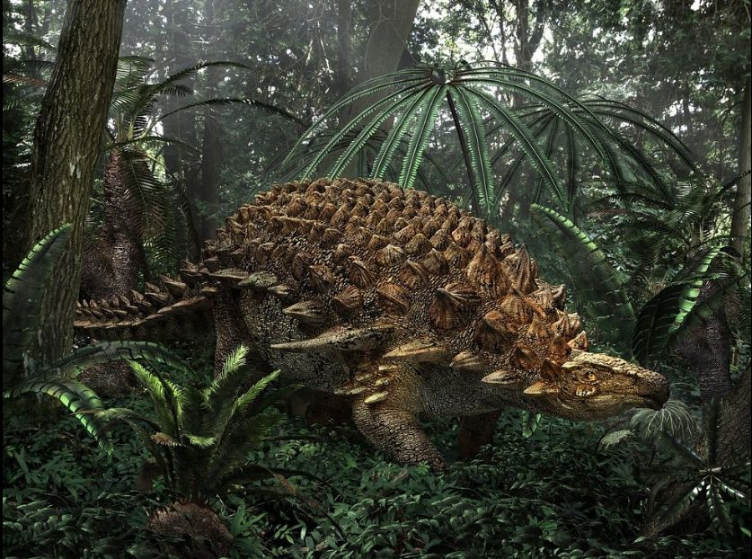

Blindagem Pesada
ANQUILOSSAURO
Porrete Caudal
Massa Óssea Sólida
Comprimento Total
6 a 8 Metros
Massa Corporal
4 a 8 Toneladas
Armadura Corporal
Placas Osteodérmicas
Marreta Caudal: A ponta de sua cauda possuía um porrete gigante de osso fundido. Guiado por músculos caudais ultra-resistentes, um golpe era capaz de quebrar pernas e costelas de grandes predadores como o T-Rex.
Tanque Biológico: Seu dorso e flancos eram cobertos por osteodermes rígidos (placas ósseas incrustadas na pele). Ele possuía inclusive pálpebras blindadas por pequenas placas para cobrir os olhos durante ataques.
